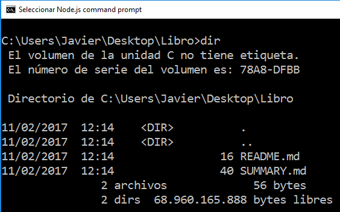

Gitbook
Gitbook es una herramienta para crear documentación de proyectos, libros técnicos y apuntes de clase usando Markdown. Permite incluir ejemplos y ejercicios interactivos(mediante JavaScript, por ejemplo).
El libro creado puede publicarse en Github, en www.gitbook.com o cualquier otro hosting web.
Instalando Gitbook
Gitbook necesita del gestor de paquetes de node.js para ser instalado, si no tienes nodejs instalado ve primero al capitulo 1 de este tutorial para saber como se instala.
Abre la consola de nodejs y ejecuta:
npm install -g gitbook-cli
Una vez tenemos instalado gitbook vamos a crear un libro siguiendo los siguientes pasos:
ejecuta
gitbook init <nombre-del-libro>.Se crea el libro con el siguiente contenido:

README.md va a contener la introducción de tu libro. SUMMARY.md va a contener la estructura de tu libro.
# Summary
* [Introduction](README.md)
* [Capítulo 1](Capítulo1.md)
* [Capítulo 2](Capítulo2.md)
En el directorio que se acaba de crear(donde se encuentras los .md) escribe los capítulos de tu libro con tu editor de texto favorito(recuerda poner la extensión .md a los ficheros).
En esta carpeta escribe cada capítulo del libro en un fichero con extensión .md(markdown).
Gitbook permite probar tu libro antes de subirlo al repositorio utilizando el siguiente comando:
gitbook serve.